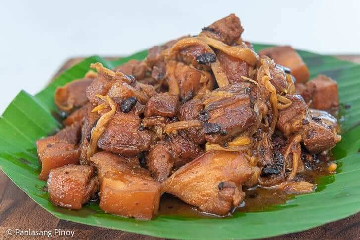

Classic chicken adobo recipe that's simple to make and loved by all who try it. It has been modified to be a bit saucier than traditional adobo and is delicious served over rice.
INGREDIENTS
2 tablespoons vegetable oil.
1 (3 pound) chicken, cut into pieces.
1 large onion, quartered and sliced.
2 tablespoons minced garlic0.
⅔ cup low sodium soy sauce.
⅓ cup white vinegar.
1 tablespoon garlic powder.
2 tablespoons black pepper.
1 bay leaf.
INSTRUCTIONS
Heat oil in a large pot over medium heat. Chicken breasts should be cut in half to have more equally sized pieces of chicken. Season chicken with salt. Add chicken to oil, skin side down, cooking 2-3 minutes on each side. When chicken begins to brown on all sides, add the cider vinegar, soy sauce, pepper corns, and onions. Mix well and cover the pot with a lid. Cook for about 15 minutes. Remove lid and continue simmering. Check doneness of chicken by cutting a piece of the dark meat to make sure there is no pinkish color. (Chicken cooked until the internal temperature reaches at least 165°F as measured using a food thermometer.) Reduce heat to low and add the curry powder and coconut milk. Cook for another 10 minutes, allowing the sauce to reduce and thicken.
Pork Sisig
Pork sisig is a popular Filipino dish. It can be considered as a main dish or an appetizer. The composition of this dish is mainly of pig's parts such as minced pork meat, ears, and face. Chicken liver, onions, and chili peppers are also added. The joy of eating food comes from many things
INGREDIENTS
1 lb pig ears.
1 lb.pig snout.
1 lb pork bell.y
2 pieces onions minced.
3 pieces bay leaves.
2 tablespoons salt.
4 thumbs ginger crushed.
1 quarts water.
INSTRUCTIONS
Combine pig ears, snout, pork belly, ginger, bay leaves, 2 teaspoons salt, and 1 quart of water in a cooking pot. Boil for 1 hour. Remove from the pot and drain the water. Heat-up your grill. Start grilling the pig parts for around 5 minutes per side. Remove from the grill afterwards and let it cool down. Make the dressing by combining all the dressing ingredients. Mix well. Chop the grilled pig parts into small pieces. In a large mixing bowl, combine the chopped pork with onion and the dressing mixture. Toss until all the ingredients are well blended. Transfer to a serving plate. Serve with your favorite drink. Share and enjoy!
Caldereta
Caldereta is a Filipino meat stew influenced by Spanish flavours. Its name comes from the Spanish word caldera, meaning cauldron. It is a classic Filipino stew of beef simmered in tomato sauce with lots of potatoes, carrots, capsicums and olives. It is hearty, tasty, and perfect for family dinners or special occasions.
INGREDIENTS
2 lbs beef cubed.
3 pieces garlic cloves crushed and chopped.
1 large onion, quartered and sliced.
⅔ cup low sodium soy sauce.
⅓ cup white vinegar>
1 tablespoon garlic powder.
2 tablespoons pepper.
1 bay leaf.
INSTRUCTIONS
Heat the cooking oil in the cooking pot or pressure cooker. 1/4 cup cooking oil Sauté the onion and garlic. 1 piece onion, 3 pieces garlic cloves Add the beef. Cook for 5 minutes or until the color turns light brown. 2 lbs beef Add the dried bay leaves and chili flakes or crushed pepper. Stir. 3 pieces dried bay leaves, 1 teaspoon chili flakes Add the liver spread. Stir. ½ cup liver spread Pour-in the tomato sauce and beef broth. 1 cup tomato sauce, 2 cups beef broth Cook the beef until it becomes tender (about 30 mins if using a pressure cooker, or 1 to 2 hours if using an ordinary pot). Add potato and carrots. Cook for 8 to 10 minutes. 2 cups potatoes, 2 cups carrots Put the green olives and bell peppers in the cooking pot. Stir and continue to cook for 5 minutes more. 1 piece red bell pepper, ⅔ cup green olives, 1 piece green bell pepper Add salt and pepper to taste salt and pepper to taste Serve Hot. Enjoy!
Sinigang
Sinigang is a Filipino soup or stew characterized by its sour and savory taste. It is most often associated with tamarind, although it can use other sour fruits and leaves as the souring agent such as unripe mangoes or rice vinegar. It is one of the more popular dishes in Filipino cuisine.
INGREDIENTS
meat
vegetables
tamarind
fish sauce
onions
siling mahaba
tomatoes
INSTRUCTIONS
Boil the young tamarind in 2 quarts of water for 40 minutes. Filter the tamarind broth using a kitchen sieve or a strainer. Squeeze the tamarind afterwards to extract its remaining juices. 1 lb. young tamarind, 2 quarts water Pour the tamarind broth into a cooking pot. Let it boil and then add the onion, pork belly, and half the amount of the tomatoes. 2 lbs. pork belly, 1 piece onion, 2 pieces tomatoes Skim-off the floating scums, pour 1 tablespoon fish sauce, cover and continue to simmer for 1 hour. Fish sauce and ground black pepper Add daikon radish and eggplants. Cook for 5 minutes. 1 piece daikon radish, 2 pieces eggplants Add the long green pepper, string beans, remaining tomatoes, and okra. Cook for 3 minutes. 8 pieces string beans, 2 pieces tomatoes, 2 pieces long green pepper, 8 pieces okras Add the chopped water spinach stalks and season with fish sauce and ground black pepper. Cook for 2 minutes. Fish sauce and ground black pepper Put the water spinach leaves. Cover and turn the heat off. Let the residual heat cook the leaves for 3 minutes before serving. 1 bunch water spinach Share and enjoy!
Tinola
This chicken tinola recipe highlights the rich flavors of Knorr Chicken Cubes and the distinct aroma of ginger. Make this version to soothe your soul.
INGREDIENTS
1 tbsp cooking oil
1 pc onion, small -sized, chopped
2 cloves garlic, chopped
1 pc ginger, cut into strips
½ Kilo chicken, cut into
4 cups water
2 pcs knorr chicken cubes
1 pc chayote or 1 pc small-sized green papaya,sliced
2 stalks morninga leaves
INSTRUCTIONS
Heat cooking oil in a cooking pot. Sauté garlic, onion, and ginger until the onion softens. Add the chicken. Continue sautéing for 2 minutes or until it turns light brown in color. Pour 2 tablespoons of fish sauce. Stir. Add the rice wash into the cooking pot. Let it boil. Simmer for 10 minutes. Add water as needed. Let it boil. Put the green papaya wedges into the pot. Continue to simmer for 15 to 20 minutes. Add Maggi Magic Chicken Cubes. Stir. Season with ground black pepper (this is optional). Turn off the heat and then add the hot pepper leaves and malunggay leaves into the cooking pot. Cover for 2 minutes to let the residual heat cook the green veggies. Transfer to a serving bowl. Serve. Share and enjoy! Notes
Humba

Humbà, also spelled hombà, is a Filipino braised pork dish from the Visayas, Philippines. It traditionally uses fatty cuts of pork belly slow-cooked until very tender in soy sauce, vinegar, black peppercorns, garlic, bay leaves, and fermented black beans sweetened with muscovado sugar.
INGREDIENTS
2 tbsp cooking oil
1 pc onion, chopped
1 tbsp garlic, chopped
½ kg liempo, cubed
1 pc knorr pork cube
¼ cup black beans
¼ cup vinegar
1 cup pineapple juice
water as needed
½ cup brown sugar
¼ cup soy sauce
2 pcs chillies
½ cup banana blossoms
INSTRUCTIONS
Heat the cooking pot then brown the pork belly Add the onions and garlic and cook until the onions are soft Put-in the soy sauce, peppercorn, bay leaves Pour-in the pineapple juice and let boil. Simmer until the pork is tender (add water as needed) Add the vinegar and wait for the mixture to re-boil. Simmer for 3 minutes Spoon-in the salted black beans and brown sugar then simmer for 5 minutes Add the dried banana blossoms and simmer for 5 to 8 minutes Transfer to a serving plate and serve. Share and enjoy!
Giniling
Pork Giniling is a pork dish that makes use of ground pork as the primary ingredient. Ground pork is stewed in tomato sauce and water to bring out the taste while vegetables such as carrots and potatoes (some also like this with raisins and green peas) are added for additional flavor and nutrition.
INGREDIENTS
1 1/2 lb ground pork
1 1/2 cups potatoes diced
1 cup carrots diced
8 ounces tomato sauce
6 cloves garlic crushed
1 medium-sized onion minced
1 teaspoon granualated sugar
1 pieces beef or pork cube
4 boiled eggs
Salt and pepper to taste
3 tablespoons cooking oil
1 cup water
INSTRUCTIONS
Heat a cooking pot and pour-in the cooking oil. When the oil is hot enough, put-in the garlic and sauté until the color turns light brown. Add the onions and sauté until the texture becomes soft. Put-in the ground pork and cook for 5 minutes. Add the beef or pork cube, tomato sauce, and water and let boil. Simmer for 20 minutes. Put the carrots and potatoes in then stir until every ingredient is properly distributed. Simmer for 10 to 12 minutes. Add salt, ground black pepper, and sugar then stir. Put in the boiled eggs and turn off the heat. Transfer to a serving bowl and serve. Share and enjoy!
Utan Bisaya
Utan bisaya is a simple Filipino vegetable dish that is composed of a variety of veggies. The vegetables are boiled in water and sometimes fish is added. It has a close similarity with other Philippine regional dishes such as dinengdeng or inabraw (Ilocos region), bulanglang (CALABARZON), and laswa ( Western Visayas).
INGREDIENTS
1 pieces eggplant
10 pieces okra
2 thumbs ginger
1 piece tamato
5 stalks green onions
1 1/2 cups spinach
1 1/2 cup squash
1 cup malunggay leaves
2 pieces long green pepper
2 slices fish fillet
1 to 2 cups string beans
1 cup loofah
salt to taste
2 cups water
INSTRUCTIONS
Bring the water to a boil. Add the ginger and squash. Continue to boil for 8 minutes (covered). Stir-in the string beans, scallions, okra, and tomato. Let the liquid re-boil and then add the long green pepper and eggplant. Stir and add the fish. Cover and cook for 10 minutes. Add the patola and malunggay leaves. Cover and cook for 3 to 5 minutes. Add some salt to taste and spinach. Transfer to a serving bowl. Serve. Share and enjoy!
Lumpia
This is a traditional Filipino recipe for lumpia, or fried spring rolls. They're made with paper-thin lumpia wrappers and filled with a savory mixture of ground pork, cabbage, and other vegetables. Serve lumpia as a side dish or appetizer with a sweet chili dipping sauce.
INGREDIENTS
1 tablespoon vegatable oil
1 pound ground pork
½ cup chopped onion
2 cloves garlic, crushed
½ cup minced carrots
½ cup chopped green onions
½ cup thinly sliced green cabbage
2 tablespoons chopped fresh cilantro
1 teaspoon ground black pepper
1 teaspoon salt
1 teaspoon garlic powder
1 teaspoon soy sauce
30 lumpia wrappers
2 cups vegatables oil for frying,or as needed
INSTRUCTIONS
Combine all filling ingredients in a bowl. Mix well. Scoop around 1 to 1 1/2 tablespoons of filling and place over a piece of lumpia wrapper. Spread the filling and then fold both sides of the wrapper. Fold the bottom. Brush beaten egg mixture on the top end of the wrapper. Roll-up until completely wrapped. Perform the same step until all mixture are consumed. Heat oil in a cooking pot. Deep fry lumpia in medium heat until it floats. Remove from the pot. Let excess oil drip. Serve. Share and enjoy
Pancit
Pancit, also spelled pansít, is a general term referring to various traditional noodle dishes in Filipino cuisine. There are numerous types of pancit, often named based on the noodles used, method of cooking, place of origin or the ingredients
INGREDIENTS
1 (12 ounce) package dried rice noodles
1 teaspoon vegatable oil
1 onion, finely diced
3 cloves garlic,minced
2 cups diced cooked chicken breast meat
1 small head cabbage, thinly sliced
4 carrot, thinly sliced
¼ cup soy sauce
2 lemons-cut into wedges,for garnish
INSTRUCTIONS
Combine pig ears, snout, pork belly, ginger, bay leaves, 2 teaspoons salt, and 1 quart of water in a cooking pot. Boil for 1 hour. Remove from the pot and drain the water. Heat-up your grill. Start grilling the pig parts for around 5 minutes per side. Remove from the grill afterwards and let it cool down. Make the dressing by combining all the dressing ingredients. Mix well. Chop the grilled pig parts into small pieces. In a large mixing bowl, combine the chopped pork with onion and the dressing mixture. Toss until all the ingredients are well blended. Transfer to a serving plate. Serve with your favorite drink. Share and enjoy!